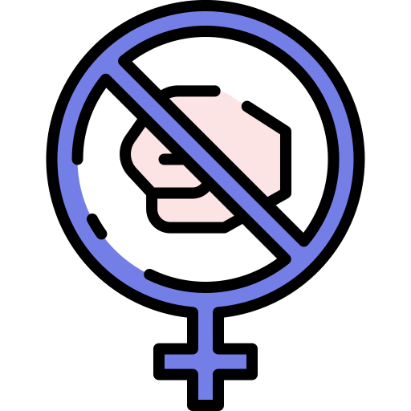
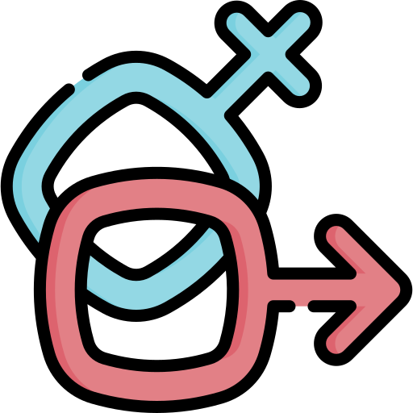
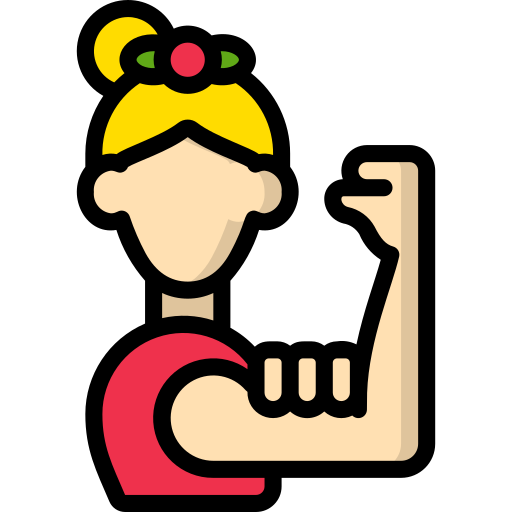
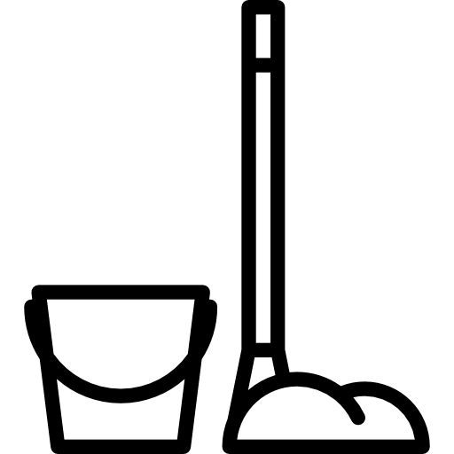
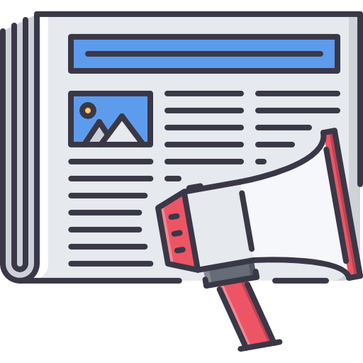

Ao longo da história a mulher foi colocada como inferior ao homem, tendo direitos negados, não podendo decidir sobre sua própria vida e sendo excluída de vários setores da sociedade.
Graças a coragem e determinação, cada vez mais direitos estão sendo conquistados pelas mulheres, cada vez mais cargos, antes proibidos para pessoas do gênero feminino, estão sendo ocupados pelas mesmas.
É muito importante que essa luta seja divulgada e que a informação chegue a todos, para que consigamos alcançar o objetivo de uma sociedade mais igualitária.
Objetivos
Igualdade
Acabar com todas as formas de discriminação contra todas as mulheres e meninas em toda parte

Acabar com a violência
Eliminar todas as formas de violência contra todas as mulheres e meninas nas esferas públicas e privadas, incluindo o tráfico e exploração sexual e de outros tipos

Assegurar o acesso universal à saúde sexual
Assegurar o acesso universal à saúde sexual e reprodutiva e os direitos reprodutivos.

Empoderamento de todas
Adotar e fortalecer políticas sólidas e legislação aplicável para a promoção da igualdade de gênero e o empoderamento de todas as mulheres e meninas em todos os níveis

Reconhecer o trabalho doméstico
Reconhecer e valorizar o trabalho de assistência e doméstico não remunerado, por meio da disponibilização de serviços públicos, infraestrutura e políticas de proteção social, bem como a promoção da responsabilidade compartilhada dentro do lar e da família.
Garantir a participação plena
Garantir a participação plena e efetiva das mulheres e a igualdade de oportunidades para a liderança em todos os níveis de tomada de decisão na vida política, econômica e pública.
Direitos iguais aos recuros econômicos
Realizar reformas para dar às mulheres direitos iguais aos recursos econômicos, bem como o acesso a propriedade e controle sobre a terra e outras formas de propriedade, serviços financeiros, herança e os recursos naturais, de acordo com as leis nacionais.

Divulgar o empoderamento
Aumentar o uso de tecnologias de base, em particular as tecnologias de informação e comunicação, para promover o empoderamento das mulheres.
Direitos Conquistados Ao Longo da História
Muitos direitos eram negados às mulheres, mas com o passar do tempo, esses direitos foram sendo conquistados graças à coragem de diversas mulheres. Aqui estão separados alguns desses direitos conquistados a partir da luta feminista, confira!
Educação
A mulher só teve o direito de frequentar uma sala de aula a partir do ano de 1827, o direito de frequentar a universidade veio apenas 50 anos depois, no ano de 1879.
Partido Político
O primeiro partido político feminino foi criado no Brasil no ano de 1910, intitulado "Partido Republicano Femino", assim, uma ferramenta de defesa do direito ao voto e participação das mulheres na sociedade foi garantida.
Voto
O direito ao voto foi conquistado no ano de 1932, após diversos movimentos feministas organizados no começo século XX, influenciados por movimentos feitos nos EUA e na Europa.
Primeira Delegacia da Mulher
Em 1985 foi criada a primeira delegacia da mulher, centralizando sua ações de proteção a mulher e investigações de crimes de violência doméstica e violência sexual.
A Mulher é reconhecida como igual ao homem pela Constituição
A mulher só foi reconhecida como igual ao homem pela Constituição a partir do ano de 1988, após a pressão de diversos movimentos feministas.
O Estatuto da Mulher Casada É Criado
Com a criação desse estatuto, em 1962, as mulheres passaram a ter o direito de trabalhar sem ter que pedir permissão ao marido. A partir daí, ela também teriam direito a heranças e a pedir a guarda dos filhos em caso de separação.
Direito de Possuir Um Cartão de Crédito
Até 1974, as mulheres não tinham um direito de possuir um cartão de crédito, mulheres divorciadas ou separadas que quisessem possuir um, teriam que levar um homem para assinar os documentos. No ano de 1974, foi aprovada a "Lei de Igualdade e Oportunidadede Crédito, para que ninguém tivesse menos direito por seu gênero ou situação civil.
Lei do Divórcio
Até o dia 26 de dezembro de 1977, as mulheres era obrigadas a permanecerem presas em seus casamentos, mesmo que essa não fosse sua vontade. Depois dessa data as mulheres passaram a ter o direito de se divorciar, mas por muito tempo as que se divorciavam eram vistas com maus olhos pela sociedade, fazendo com que muitas continuassem no casamento para não sofrerem com o preconceito.
O que é o feminismo?
O feminismo é um movimento que luta pela igualdade de condições entre homens e mulheres. É a coragem de contrariar os padrões e ordens impostas pelo patriarcado e em prol de uma vida melhor e mais oportunidades para todas a mulheres e meninas do mundo.
Esse vídeo retrata um pouco sobre o que é o feminismo e sobre os seus reais valores, que muitas vezes são alvo de calúnia e distorção da imagem do movimento. Dê um play e conheça mais sobre a importância do feminismo!
Notícias
A informação é uma forte arma na luta pela igualdade de gênero e empoderamento feminino, por isso, o conhecimento de direitos e oportunidades que foram conquistados a partir do movimento feminista é muito importante. Aqui estão separas algumas notícias, talvez um pouco assustadoras, sobre fatos que aconteceram e que acontecem com as mulheres e meninas ao redor do mundo.
Franca Viola, a primeira mulher a recusar o "casamento reparador"
Franca Viola é uma mulher italiana que ficou famosa em 1960, após se recusar a seguir a "lei do casamento reparador", que obrigava as vítimas de estupro a casarem com seus estupradores e não serem mais motivo de vergonha aos olhos da sociedade.
A infibulação é um tipo de multilação da genitália feminina, consiste no fechamento do órgão genital a fim de impedir relações sexuais. Infelizmente essa prática ainda pode ser encontrada hoje, porém muitas pessoas não sabem nem ao menos de sua existência, por isso o conhecimento sobre a prática é importante para que possamos lutar pelo seu fim.
Ainda nos dias de hoje é possível encontrar casos em que mulheres, exercendo as mesmas funções de homens na mesma empresa, ganham menos apenas por seu sexo. Isso é uma prática extremamente ultrapassada, é importante que, quando presenciar a ocorrência de casos como esse, seja feita uma denúncia, para que isso pare de acontecer e possamos chegar mais próximo de uma igualdade.
Existem cinco tipos de violência contra mulher, a física, psicológica, moral, sexual e patrimonial. As mesmas não ocorrem isoladas umas das outras e são de extrema gravidade, constituindo ato de violação contra os direitos humanos e devendo ser denunciadas.
Conheça sobre o assunto e sobre as formas de denúncia clicando aqui
A desigualdade de poder entre gêneros
Ainda no século XXI, infelizmente, ser homem ainda é sinônimo de ter mais oportunidades, mais segurança e muitas vezes mais direitos. A mudança desse fato é essencial, para isso, devemos lutar com todas nossa forças.
Em um artigo feito pela ONU, em razão do dia da mulher do ano de 2020, o secretário-geral da organização, António Guterres, afirmou que a desigualdade de gênero é a grande injustiça da nossa época e o maior desafio de direitos humanos que encontramos. Além disso, enfatizou a importância da igualdade de gênero para uma globalização justa “Se quisermos alcançar uma globalização justa que funcione para todas e todos, precisamos basear nossas políticas em estatísticas que levem em conta as verdadeiras contribuições das mulheres.”
Como já dito, a informação é uma das mais fortes armas para qualquer causa, por isso, o compartilhamento de mensagens verídicas pode fazer com que mais pessoas conheçam o movimento e colaborem com a luta.
Busque saber mais
Não se deixe levar por todas as informações por aí, muita gente, querendo desvalorizar o movimento, faz postagens com comentários falsos e não condizentes com o real sentido do fato, então sempre procure pesquisar sobre os reais sentidos.
Denuncie
Violência contra mulher: disque 180
Sobre Mim
Meu nome é Janaína Saldiva Kshesek, tenho 16 anos e estou no 2° ano do ensino médio, em um curso técnico integrado de Petróleo e Gás. Descobri meu gosto por programação a partir de uma matéria que tive no 1° ano e depois de fazer alguns cursos online sobre inteligência artificial. Quando vi sobre o curso "Meu Primeiro Site", me identifiquei na hora e quis me inscrever para aumentar meu conhecimento na área. Penso em trabalhar com isso, mas ainda não tenho certeza sobre em qual curso ingressar e em qual carreira exatamente seguir